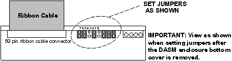
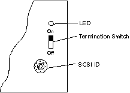

Operating Documentation
Direction 5193574-800, Rev# 22
LightSpeed 7.X Service Methods
Module Version 1.0, Version Date 2/14/07
Operating Documentation |
Illustration 1: DASM Jumpers

Illustration 2: DASM Bottom, Showing SCSI Settings

RS232 serial host control interface, 25-pin D-type connector
pin 2 (TX)
pin 3 (RX)
pin 7 (GND)
A null modem cable may be required (reverses pins 2-3) between some cameras.
baud rate = 1200
start bits = 1
stop bits =1
parity = even
end of message = CR
protocol = ACK/NACK (3M M952)
DASM green LEDs viewed from front of DASM and air vents at bottom.
------------------------------------------
o o o o
PWR CPU SCSI PIF
------------------------------------------
DASM air inlet vents
------------------------------------------PWR - on whenever DASM power applied (+5VDC)
CPU - flashes idle heartbeat at 1 CPS or indicates CPU activity
SCSI - flashes when OC and DASM communicate over the SCSIbus
PIF - flashes when the DASM and camera communicate over the serial port
RS422/RS485 8-bit digital image data interface, 37-pin D-type connector (3M M952 defacto industry standard digital interface).
pixels: 512
lines: 512
bits/pixel: 8
protocol: 3M M952
The gray scale reference bar option at the left of the filmed images is NOT supported by the digital filming interface.